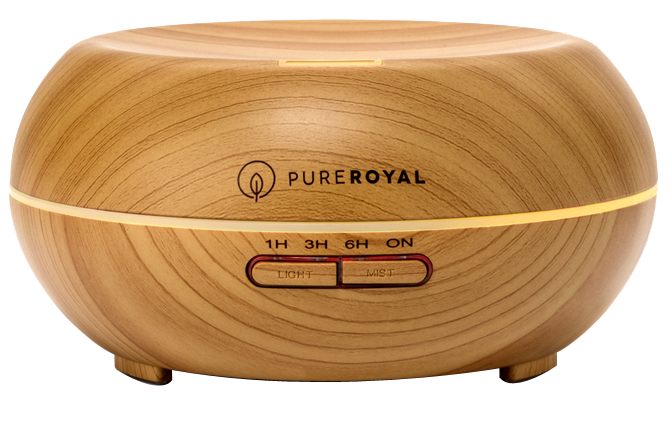

Who am I?
Hi – I’m Nicole, a passionate marketer who loves solving problems and helping businesses improve the lives of their customers. As an American born native of the Danish West Indies, the warmth of sunshine brings me pure joy. In my spare time you could find me on wellness blogs looking for DIY health remedies and the next best healthy recipe for chocolate chip cookies or birthday cakes.
Most of my 14-year career was lived at Nationwide where I focused on end-to-end management of integrated marketing campaigns. This means that I have experience defining a big picture strategy and working with a cross-functional team to deliver the pieces and parts needed to make that strategy come to life. During my time at Nationwide I launched product and brand focused marketing campaigns and events. I also led advertising campaigns that generated leads and maximized revenue of Nationwide’s financial products.
As an Amazon merchant I successfully launched advertising campaigns resulting in new traffic and revenue.
After the birth of our first child, I made the choice to leave the corporate world and start a consumer focused product business and work remotely from home to balance my family/career equation.
During that time, I built a niche Amazon brand called Pure Royal Brands which designed, manufactured and shipped aromatherapy essential oil diffusers and humidifiers to customers in the United States.

My time as an Amazon merchant was a wonderful and exciting experience where I got to explore my creative product development side and balance it with working with overseas manufacturing partners. I also successfully launched advertising campaigns that resulted in new traffic and product sales.
Today, I’m excited to join a healthy work family. I am ready to continue my life’s journey with a new chapter in marketing that’s focused on helping companies solve problems and build meaningful connections with its customers.